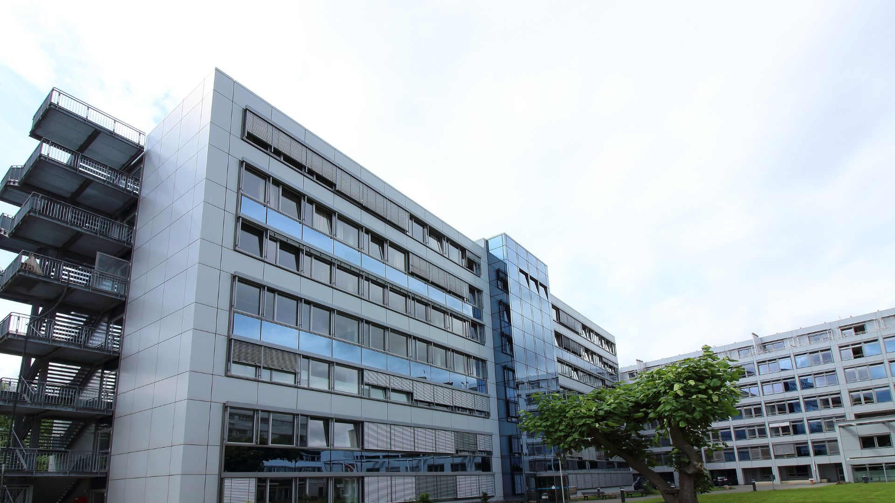
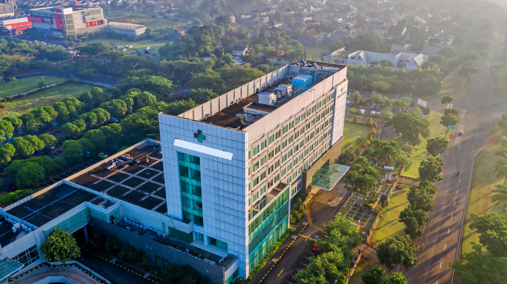

Our Branches
Pennsylvania
Nestled in the heart of Pennsylvania’s picturesque landscapes, our Lycasian Health Centre branch embodies the spirit of warmth and community care. With state-of-the-art facilities and a team of world-class professionals, we bring advanced healthcare to the serene setting of the Keystone State. Our Pennsylvania branch is not just a place for treatment, but a haven where patients and families find comfort, compassion, and cutting-edge medical solutions. From routine check-ups to complex surgeries, we are committed to nurturing the health and well-being of every individual who walks through our doors, ensuring they leave with a smile and a healthier heart.
Mississippi
In the vibrant soul of the Deep South, our Lycasian Health Centre branch in Mississippi stands as a beacon of hope and healing. Reflecting the rich cultural heritage and the warm, welcoming spirit of Mississippi, this branch offers more than just medical services—it offers a place where the values of trust, community, and care come alive. Our Mississippi team, with their deep-rooted dedication and expertise, works tirelessly to deliver top-notch healthcare in a setting that feels like home. Whether it's through personalized treatment plans or our comprehensive wellness programs, we strive to make a meaningful difference in the lives of our patients, one caring interaction at a time.
Hospital Summary
| Pennsylvania | Mississippi | |
|---|---|---|
| Specialities | Cardiology,Neurology | Orthopedics, Pediatrics |
| Rooms | 300 | 200 |
| Facilities | Lounge-rooms, Cafetaria, Family rooms | Cafetaria, Private-lounge, Kids play area |
| * Data updated as of 2024 | ||